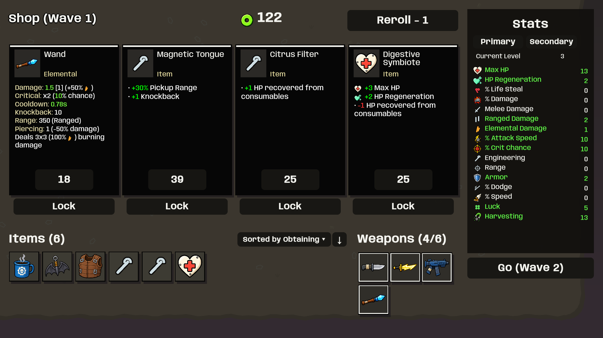
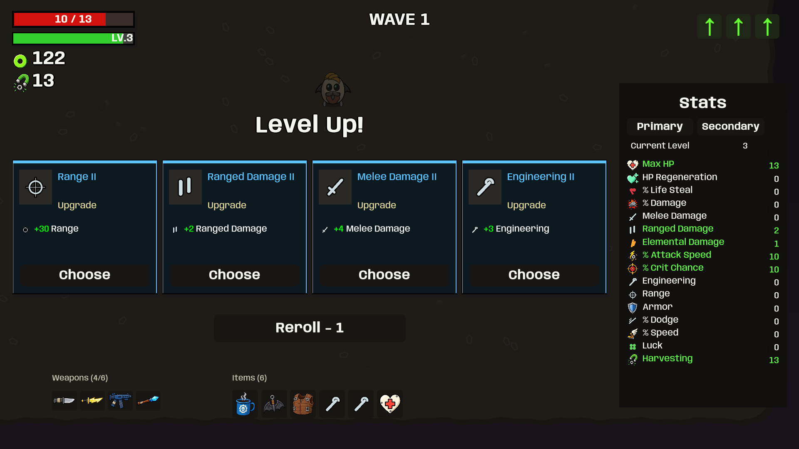
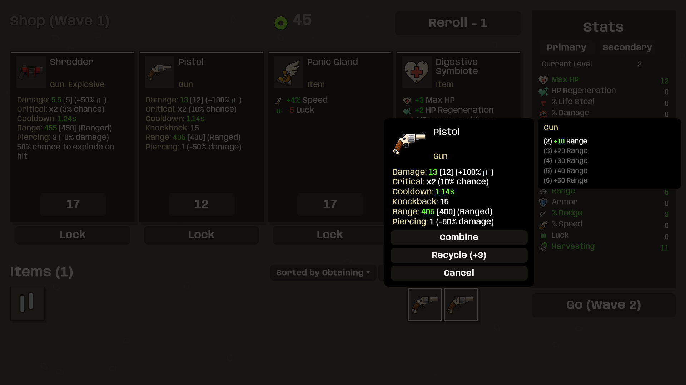
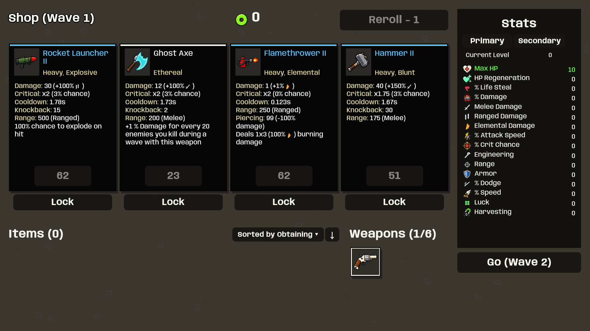
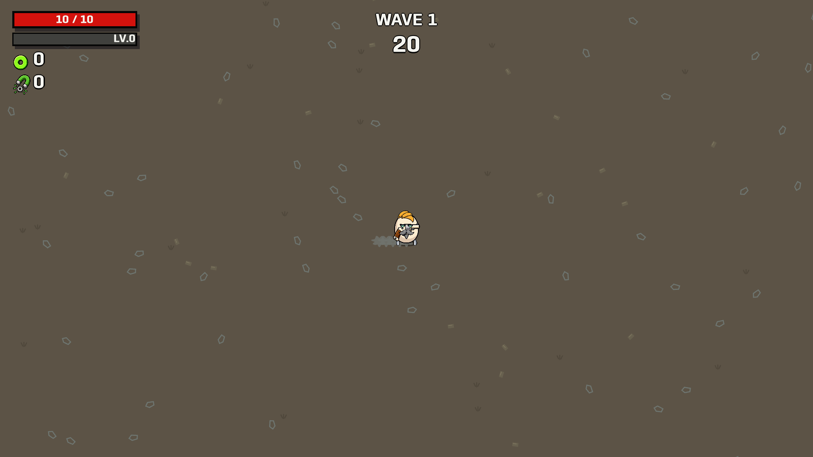
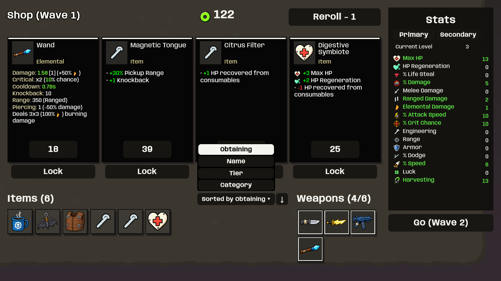
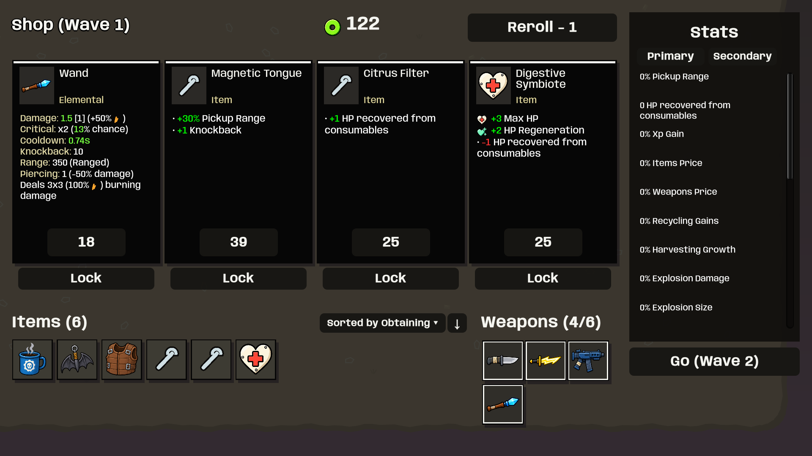
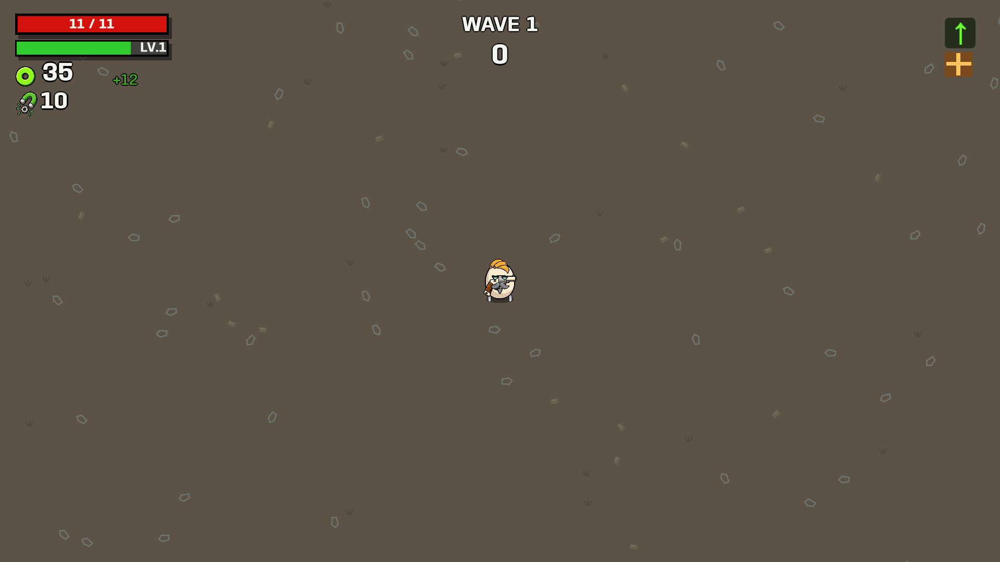

User-supplied reference Scrapshift: items left, weapons in two rows right, live modifier text
Scrapshift: items left, weapons in two rows right, live modifier text
User-supplied reference Scrapshift: blue tier II, stat icon, green gain and white label
Scrapshift: blue tier II, stat icon, green gain and white label
User-supplied reference Scrapshift: weapon actions with attached set bonuses
Scrapshift: weapon actions with attached set bonuses
Corrected atlas boundaries: no neighboring weapon fragments
Walking smoke, original procedural artwork
Item sorting modes and reverse order
Secondary stats
Harvesting beneath materials; stored bag hidden
Harvesting: grants materials and XP at wave end. Positive Harvesting normally grows by 5%, rounded up, for the next wave. Items and characters may modify it. Stored leftover materials remain a separate mechanic even though their bag is hidden.
All 45 UI fixture cases passed with fresh captures. This checks staged rendering and inspection targets, not native input or human survival balance. Extended enemy movement/timing and companion presentation remain Unity adaptations; this is not a claim of pixel-perfect or frame-perfect parity.
Implementation notes · UI report · Verification record